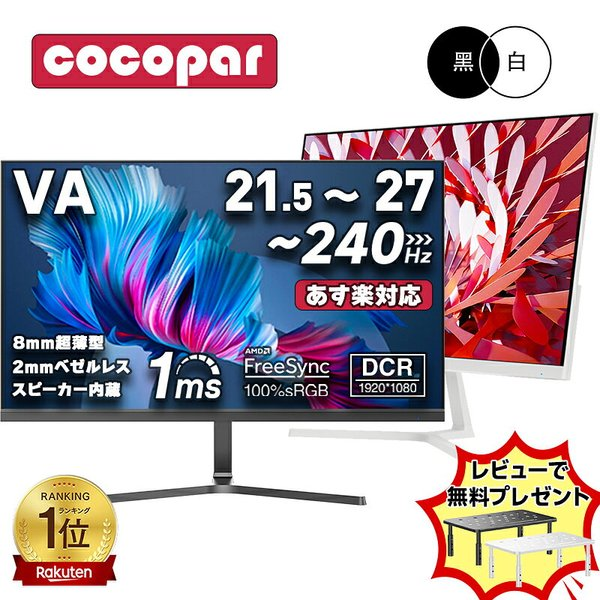
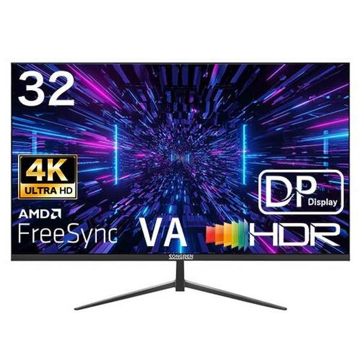
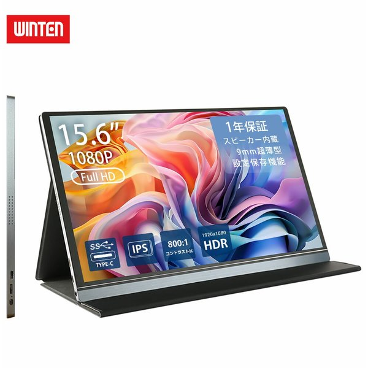
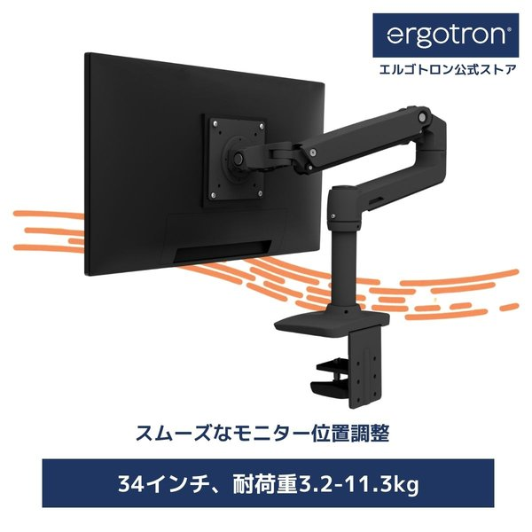
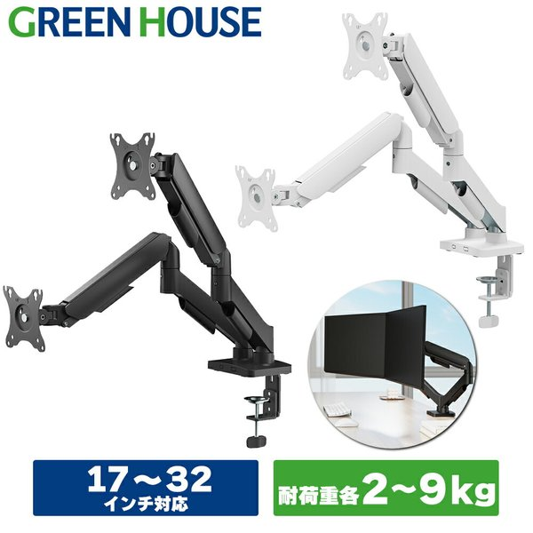
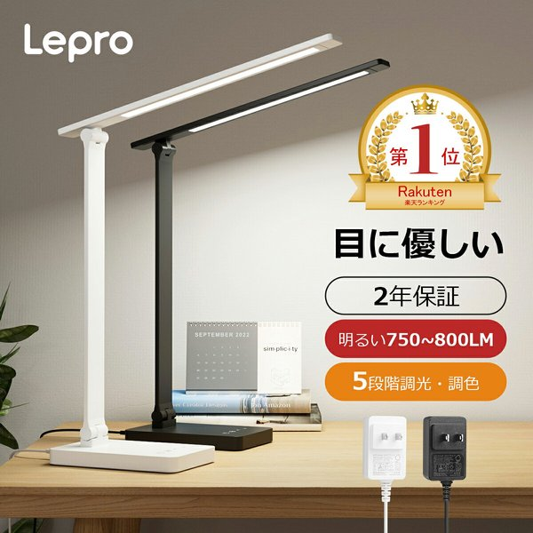
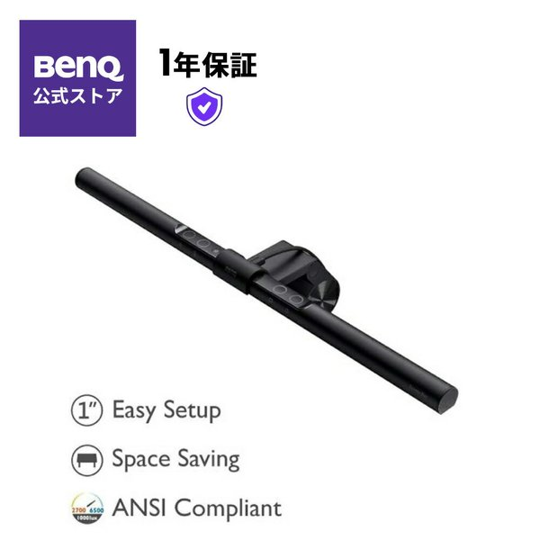
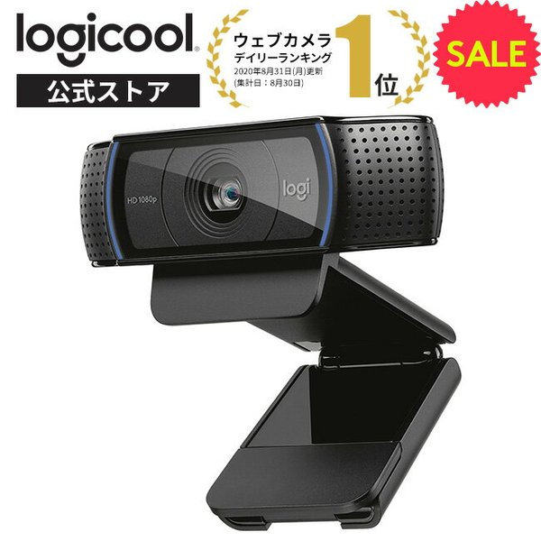
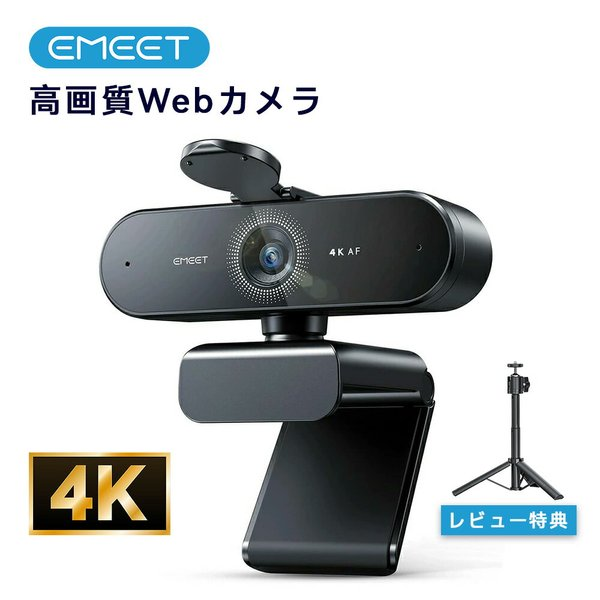

【2026年ブラックフライデー】デスク環境を一気に整える！4Kモニター・モニターアーム・Webカメラ・デスクライト10選
ブラックフライデーは、デスク周りをまとめて更新するのに向いた時期です。モニター、アーム、Webカメラ、照明は、どれも1つ替えるだけで毎日の作業の見え方が変わります。
選ぶ軸は、画面の広さ、デスクの空きスペース、そしてケーブルの本数です。27型の4Kは文字が細かく、USB-C一本で給電まで済むモデルなら電源を含めた配線が減ります。32型は作業領域を広く取れるぶん、奥行き60cm以上のデスク向きです。モニターアームに載せ替えると画面下が空いて、キーボードとノートを置く場所が生まれます。Webカメラは1080pで会議には十分、資料を映すなら4Kを選びます。照明はモニターに映り込まない掛け式か、調光できる台座式を選ぶと、夜の作業でも目が疲れにくくなります。
本記事では、楽天市場で人気・高評価のデスク環境ガジェット10選を、実売価格とレビュー評価つきで写真付き紹介します。
- おすすめ10選 スペック・特徴比較表
- BEST 1｜27インチ 4Kモニター S-4K27C（USB-C 65W給電・IPS・3年保証）
- BEST 2｜ゲーミングモニター HG-238（21.5〜27型・最大240Hz）
- BEST 3｜32インチ 4Kモニター（VAパネル・HDR・VESA対応）
- BEST 4｜モバイルモニター 15.6インチ WT-156H2-BS（フルHD・非光沢IPS）
- BEST 5｜LX デスクマウント モニターアーム 45-241-224（34インチまで・10年保証）
- BEST 6｜モニターアーム 2画面 GH-AMDX2H（32インチまで・各9kg）
- BEST 7｜LEDデスクライト PR310001（JIS AA形相当・800lm・調光調色）
- BEST 8｜ScreenBar スクリーンバー（モニター掛け式・自動調光）
- BEST 9｜ウェブカメラ C920n（フルHD 1080P・自動フォーカス）
- BEST 10｜4K Webカメラ NOVA 4K（PDAFオートフォーカス・ノイズキャンセリングマイク）
- 【読者負担0円】買わなくても得する無料サービス
- まとめ：デスク環境ガジェット10選の選び方
| 順位 | 商品名 | ブランド | 最大の特徴・おすすめ理由 | 総合評価 |
|---|---|---|---|---|
| BEST 1 | 27インチ 4Kモニター S-4K27C（USB-C 65W給電・IPS・3年保証） | KKSMART | USB-C1本で映像＋65W給電 | 4.75 |
| BEST 2 | ゲーミングモニター HG-238（21.5〜27型・最大240Hz） | cocopar | サイズとリフレッシュレートを選べる | 4.74 |
| BEST 3 | 32インチ 4Kモニター（VAパネル・HDR・VESA対応） | SONGREN | 32インチ4Kで作業領域が広い | 4.54 |
| BEST 4 | モバイルモニター 15.6インチ WT-156H2-BS（フルHD・非光沢IPS） | WINTEN | 15.6型フルHDでサブ画面に十分 | 4.61 |
| BEST 5 | LX デスクマウント モニターアーム 45-241-224（34インチまで・10年保証） | エルゴトロン（Ergotron） | 10年保証付き | 4.62 |
| BEST 6 | モニターアーム 2画面 GH-AMDX2H（32インチまで・各9kg） | グリーンハウス | 32インチ2画面まで対応 | 4.43 |
| BEST 7 | LEDデスクライト PR310001（JIS AA形相当・800lm・調光調色） | Lepro | JIS AA形相当の明るさ | 4.68 |
| BEST 8 | ScreenBar スクリーンバー（モニター掛け式・自動調光） | BenQ | モニターに掛けるだけで設置 | 4.63 |
| BEST 9 | ウェブカメラ C920n（フルHD 1080P・自動フォーカス） | ロジクール（Logicool） | 1080Pで会議に十分な画質 | 4.41 |
| BEST 10 | 4K Webカメラ NOVA 4K（PDAFオートフォーカス・ノイズキャンセリングマイク） | EMEET | 4K対応で資料もくっきり | 4.56 |
27インチ 4Kモニター S-4K27C（USB-C 65W給電・IPS・3年保証）

27インチで4KのIPSモニター。USB-Cケーブル1本で映像を送りながら最大65Wの給電ができるので、ノートPCの電源アダプターを別に挿さずに済みます。DCI-P3 98%の広色域で、Macの画面と色の差が出にくいのも特徴です。高さ調整できるスタンド付きで、目線の高さに画面を合わせられます。楽天市場での実売価格は約32,990円（2026年11月時点）。
- USB-C1本で映像＋65W給電
- DCI-P3 98%の広色域
- 3年保証と高さ調整スタンド
- 60Hzなので、高リフレッシュレートのゲーム用途には向かない
ゲーミングモニター HG-238（21.5〜27型・最大240Hz）

21.5型から27型まで、サイズとリフレッシュレートを選べるゲーミングモニター。1ms応答で、FPSのような動きの速いゲームでも残像が残りにくい設計です。スピーカー内蔵で、スピーカーを別に置かなくても音が出ます。非光沢の画面なので、窓の光が映り込みにくいのも作業向きです。楽天市場での実売価格は約13,999円（2026年11月時点）。
- サイズとリフレッシュレートを選べる
- 1ms応答・最大240Hz
- スピーカー内蔵で配線が減る
- サイズごとにパネルが異なるので、選ぶ型の仕様は注文前に確認する
32インチ 4Kモニター（VAパネル・HDR・VESA対応）

32インチで4Kの液晶モニター。VAパネルは黒が沈むので、映画や写真の暗い部分が見やすく、HDRにも対応しています。画面が大きいぶん、表計算と資料を横に並べても窮屈になりません。VESA対応なので、付属スタンドではなくモニターアームに載せ替えられます。楽天市場での実売価格は約39,800円（2026年11月時点）。
- 32インチ4Kで作業領域が広い
- VAパネルでコントラストが高い
- VESA対応でアームに載せ替えられる
- レビューは37件と少なく、口コミはこれから増える段階
モバイルモニター 15.6インチ WT-156H2-BS（フルHD・非光沢IPS）

15.6インチのフルHDモバイルモニター。ノートPCの隣に置くサブ画面として、資料を見ながら作業するのに十分な解像度があります。カバーがスタンドを兼ねるので、開いて置くだけで自立します。Type-CとHDMIの両方に対応し、ゲーム機やタブレットにもつなげます。楽天市場での実売価格は約16,800円（2026年11月時点）。
- 15.6型フルHDでサブ画面に十分
- カバーがスタンドを兼ねる
- Type-C・HDMI両対応
- バッテリーは載っていないので、使うときは給電しながらになる
LX デスクマウント モニターアーム 45-241-224（34インチまで・10年保証）

デスクにクランプで固定する、ガススプリング式のモニターアーム。3.2〜11.3kgのモニターを載せられ、指先の力で高さと角度を動かせます。34インチまで対応し、画面下が大きく空くので、キーボードとノートを置く場所が生まれます。10年保証が付き、長く使う前提で選べます。楽天市場での実売価格は約18,200円（2026年11月時点）。
- 10年保証付き
- 耐荷重3.2〜11.3kg
- 画面下が空いてデスクが広くなる
- 1万8千円台と価格は高め。天板の厚さとクランプ可否を先に確認する
モニターアーム 2画面 GH-AMDX2H（32インチまで・各9kg）

2画面を1本の支柱で支えるデュアルモニターアーム。32インチまで、各9kgまでのモニターを載せられます。土台が組み立て済みで届くので、箱から出してクランプを締めるだけで設置できます。メーカー3年保証付きで、2画面の高さを揃えたい人に向いています。楽天市場での実売価格は約7,998円（2026年11月時点）。
- 32インチ2画面まで対応
- 土台組み立て済みで設置が簡単
- メーカー3年保証
- メカニカルスプリング式なので、ガス式ほど軽い力では動かない
LEDデスクライト PR310001（JIS AA形相当・800lm・調光調色）

JIS規格AA形相当の明るさを持つLEDデスクライト。最大800ルーメンで、手元の書類とキーボードを同時に照らせます。明るさと色温度を段階的に変えられるので、昼は白め、夜は暖色にと切り替えられます。ACアダプター式で、電池切れを気にせず使えます。楽天市場での実売価格は約2,799円（2026年11月時点）。
- JIS AA形相当の明るさ
- 調光・調色で夜も眩しくない
- ACアダプター式で電池切れなし
- 台座式なので、デスクの面積を少し使う
ScreenBar スクリーンバー（モニター掛け式・自動調光）

モニターの上に掛けて使うバー型のライト。画面を照らさず手元だけを明るくするので、モニターに光が映り込みません。周囲の明るさを感知して自動で明るさを調整し、USBから給電します。デスクに台座を置かないぶん、キーボードの位置を自由に決められます。楽天市場での実売価格は約17,550円（2026年11月時点）。
- モニターに掛けるだけで設置
- 自動調光で映り込みがない
- デスクを広く使える
- 1万7千円台と、デスクライトとしては高価
ウェブカメラ C920n（フルHD 1080P・自動フォーカス）

フルHD 1080Pで撮れる定番のWebカメラ。ステレオマイクを内蔵しているので、ヘッドセットなしでもWeb会議の音声が拾えます。自動フォーカスが付き、顔を近づけてもピントが合います。USBでつなぐだけで使え、WindowsとMacの両方に対応します。楽天市場での実売価格は約8,360円（2026年11月時点）。
- 1080Pで会議に十分な画質
- 自動フォーカスとステレオマイク内蔵
- USB接続ですぐ使える
- 4Kではないので、資料の細かい文字を映す用途には不足
4K Webカメラ NOVA 4K（PDAFオートフォーカス・ノイズキャンセリングマイク）

4Kの映像が撮れるWebカメラ。PDAF方式のオートフォーカスで、手元の書類に切り替えてもすぐピントが合います。デュアルのノイズキャンセリングマイクを内蔵し、エアコンの音やキーボードの音を抑えて声を拾います。プライバシーカバー付きで、使わないときはレンズを塞げます。楽天市場での実売価格は約4,999円（2026年11月時点）。
- 4K対応で資料もくっきり
- PDAFで手元にも素早くピント
- プライバシーカバー付き
- 4Kで使うにはUSB3.0のポートと、それなりのPC性能が要る
この記事の商品を買う前に、まずは無料で得する選択肢をチェック。どれも登録・利用は0円で、無料期間中に解約すれば料金はかかりません。読みたい雑誌がある人、ポイントを貯めたい人、アンケートなら気軽という人、それぞれに合うものを選べます。
初回31日無料・無料期間中に解約すれば0円 → 楽天ポイントモール｜登録無料で毎日ポイ活
買い物なしでもポイントが貯まる無料サービス → 楽天インサイト｜アンケートに答えてポイント
登録無料・すきま時間のアンケートで貯まる → 楽天カード｜年会費永年無料
新規発行・年会費ずっと0円 →
4つのサービスの違いと使い分けは「出費0円で得する！買わずにポイントが貯まる無料サービス厳選4選」でまとめています。
💡 まとめ：デスク環境ガジェット10選の選び方
デスク環境は、画面・アーム・照明の順に替えると効果が分かりやすいです。まずモニターを4Kにするか、アームで高さを合わせるだけでも、首と目の負担が変わります。Webカメラは会議の頻度で1080pか4Kを選び、照明は画面に映り込まない掛け式が扱いやすいです。ブラックフライデーは型落ちの上位機種が下がるので、欲しい型番を決めてから価格の推移を見るのがおすすめ。アームは、取り付ける天板の厚さとクランプが挟めるかを先に測ってください。
楽天市場では「5と0のつく日」や「お買い物マラソン」などのキャンペーンに合わせて購入すると、ポイント還元が最大化してお得に手に入ります。ぜひチェックしてみてくださいね。